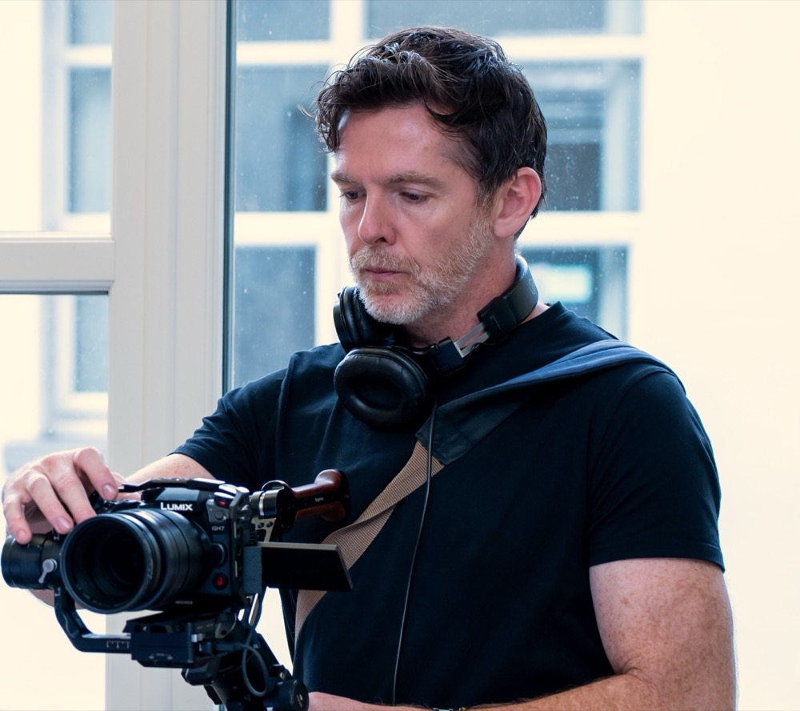

Video Production
Storyboarding, cinematography, lighting and audio recording — full production from concept to wrap, on location or in studio.
Videography · Dublin & Wicklow, Ireland
Glad Animal Movements is the Dublin & Wicklow-based videography studio of Conor Donelan — bringing fifteen years of performance and storytelling to corporate, community and arts video production across Ireland.
About

Glad Animal Movements was founded in 2020 by Conor Donelan after fifteen years working as a performer and presenter. We got our start at Draíocht Arts Centre in Blanchardstown, documenting projects for their children and youth arts programme — including Between Us There Is… (a remote duet danced during lockdown), Footloose and The Song Project.
From there we've branched into a wide variety of productions, from community to corporate: trusted by the Biodiversity and Heritage departments of Galway and Monaghan County Councils, covering events for IICP College, and serving as in-house crew with award-winning production design company Nineyards at the Reinvention Summit.
We're proud associates of McNulty Performance in their long-term partnership with Amazon Web Services — and we keep our roots in the arts, creating funding documents for theatre companies like Speckintime and visual artists such as Karen Ebbs.
Our grounding in theatre and performance gives us a unique lens to discern the true heart of the stories we tell — and the capacity to put our collaborators at their ease.
Services
Storyboarding, cinematography, lighting and audio recording — full production from concept to wrap, on location or in studio.
Editing, colour grading, sound design & mixing and motion graphics in DaVinci Resolve and Adobe Premiere Pro.
On-camera coaching, script breakdown and interview facilitation — a performer's ear for authentic, at-ease delivery.
Full livestream set-up with autocue and studio lighting for conferences, launches and hybrid events.
DJI drone and gimbal work for sweeping establishing shots and smooth, cinematic movement.
Corporate, promotional and social-media video engineered to drive brand awareness and actually get watched.
Selected Work
Nineyards × Jameson
In-house studio production and event coverage with the award-winning production design company — watch:
2024 – present
McNulty Performance × AWS
Ongoing video production for the long-term Amazon Web Services partnership. 2023 – present
Galway County Council
Documentary storytelling for the Biodiversity & Heritage departments — watch:
2025 – 2026
Monaghan County Council
Documentary work across the county's Biodiversity and Heritage sections — watch:
2024 – 2025
Meaghers Pharmacy Group
Social-media content and product tutorial videos for retail health brands — watch:
2026
Draíocht Arts Centre
Five years of community documentation — watch:
2020 – 2025
Karen Ebbs
Exhibition film for the visual artist, alongside funding documents for theatre company Speckintime — watch:
2025
IICP College
Livestream facilitation and event films for the Institute of Integrative Counselling and Psychotherapy — watch:
2025
Clients


 Monaghan County Council
Monaghan County Council


Kind Words
“Incredibly professional and organised — always fully prepared and on top of the brief. He wasn't just there to film; he contributed creatively and strategically in a way that added huge value. Reliable, talented, and an absolute pleasure to work with — I'd highly recommend Conor to anyone looking for a videographer.”
“An absolute pleasure to work with — personable, professional, and superb at his craft. He created a relaxed atmosphere and delivered on schedule, with fantastic attention to detail and creativity. He comes highly recommended from us — so much so he's doing more work for the business in the coming weeks.”
“Excellent. Highly recommended.”
“Conor is our go-to camera op when we need additional crew. A fantastic asset to any production — would highly recommend.”
Contact
Drop us a line and let's talk about what you're making.